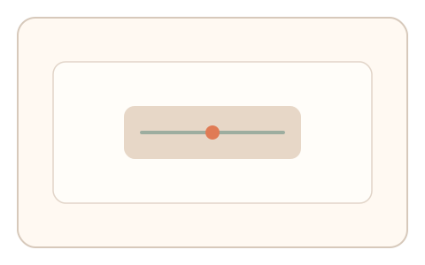
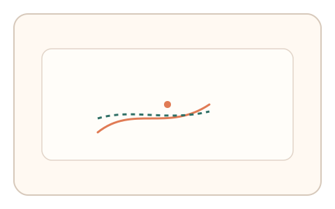
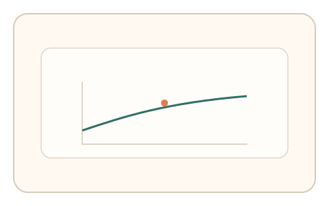

#174
Reverse Brainstorming - Round 4
已扩展
交互‑渲染闭环
将用户操作实时反馈到渲染中，评估“操作‑渲染‑再操作”的闭环一致性。
概念原文
将用户操作实时反馈到渲染中（例如动态改变阻尼/对比度），并基于“操作‑渲染‑再操作”的闭环一致性判定。
篡改 UI 的代理层难以保持闭环同步。
研究背景
真实交互是闭环反馈过程：渲染变化会即时影响下一步操作。代理层或回放难以保持细粒度同步，闭环误差与延迟结构可用于识别异常。
核心机制
- 用户操作驱动渲染参数实时变化。
- 系统记录操作‑渲染的时延与幅度响应。
- 观察再操作的修正与收敛曲线。
- 以闭环一致性和收敛速度判定。
用户流程
- 步骤 1：用户操作界面，渲染实时反馈。
- 步骤 2：用户根据反馈继续调整。
- 步骤 3：系统分析闭环一致性并判定。
判定信号
操作‑渲染响应延迟
真实反馈存在稳定延迟结构。
闭环误差收敛曲线
人类会逐步修正并收敛。
判定逻辑
响应延迟与收敛曲线需落在人类区间；无收敛或过度线性补偿判异常。
对抗面
- 脚本直接读取渲染状态并模拟
- 代理层篡改 UI 后回放
防御与缓解
- 随机化反馈映射与参数
- 加入微小动态变化
- 多参数耦合提高拟合成本
可达性与风险
提供低敏感度或简化反馈的替代任务。
- 高延迟设备影响闭环一致性
- 参数过强导致误拒
可视化状态

状态 1：实时反馈
操作即时改变渲染效果。

状态 2：连续修正
用户根据反馈继续调整。

状态 3：闭环判定
分析收敛与延迟结构。
参考资料
Closed-loop control
说明闭环反馈与收敛特性。
Human–computer interaction
说明交互中的反馈与响应。